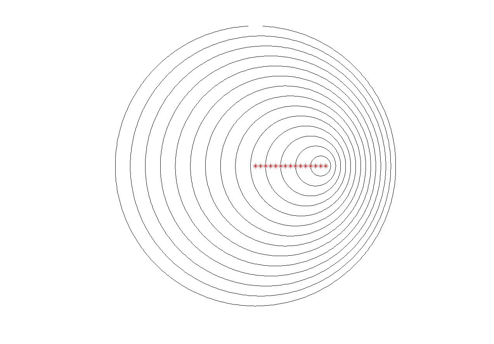

Der Dopplereffekt ist jener Effekt, der die Frequenz eines Tons, welcher von einer Schallquelle ausgeht, scheinbar verändert, wenn sich der Beobachter relativ zur Schallquelle bewegt. Sie sollen nun ein
schall
schreiben, welches mithilfe der Funktion kreisf1 diesen Effekt visualisiert. Dafür müssen Sie zuerst die Aufgaben Kreisparametrisierung und Errormeldung Kreis abgeben, weil kreisf1 dort erstellt wird.
Die Visualisierung soll durch eine Momentaufnahme der bewegten Schallquelle und den davor ausgesandten Wellenfronten geschehen (siehe Grafik). Die Vorgaben sind folgende: Die Schallquelle bewegt sich vom Koordinatenursprung von Links nach Rechts, mit einer bestimmten Geschwindigkeit $v$. Die Momentaufnahme wird nach genau einer Sekunde gemacht. Darin sollen 50 Wellenfronten dieser ersten Sekunde der Bewegung erkennbar sein, sowie die Positionen der Schallquelle, an denen die betrachteten Wellenfronten ausgesandt wurden (gleichmäßige Abstände). Die Schallgeschwindigkeit beträgt 337,5 m/s (bei angenommenen 10°C). Speichern Sie diesen Wert als Variable $c$. Programmieren Sie das Skript zuerst nur für eine Geschwindigkeit $v=c/2$. Zeichnen Sie die Kreise mit kreisf1 mit jeweils n = 50 Punkten. Verwenden Sie auf jeden Fall zur besseren Darstellung

Danach erweitern Sie Ihr Skript, sodass drei
| figure-Nummer | v |
|---|---|
| 1 | $c/2$ |
| 2 | $c$ |
| 3 | $2\cdot c$ |
Die Mittelpunkte sollen als rote * eingezeichnet werden. Betiteln Sie den
Die Gleichung, mit der Sie zu den x-Werten der Mittelpunktskoordinaten kommen, ist:
$$ Mx=v\cdot t $$Verwenden Sie zur Berechnung von My den Befehl
Bedenken Sie, dass die Kreise vom größten zum kleinsten gezeichnet werden sollen. Die Werte im Zeitvektor t sind allerdings aufsteigend (t(1) ist der kleinste Wert, t(50) der größte). Verwenden Sie also die Gleichung
zur Berechnung der Radien, so sind auch die Werte im Vektor r aufsteigend. Sie müssen also den erhaltenen Vektor noch “umdrehen”, damit die Werte - wie verlangt - absteigend im Vektor stehen. Dafür eignet sich der Befehl